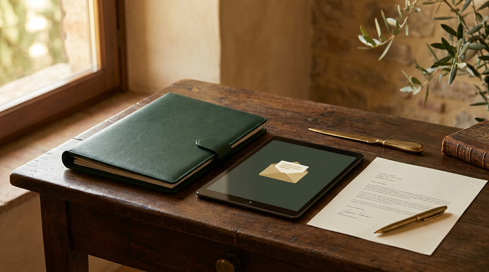

Licenziamento via mail: valido se rispetta la forma scritta
La Corte di Cassazione ha chiarito che il licenziamento comunicato con una semplice email è valido purché l'atto rivesta la forma scritta. Il requisito imposto dalla legge riguarda la forma del provvedimento, non il mezzo di trasmissione. Una pronuncia che ridimensiona il ruolo della Pec e impone attenzione su contenuto e prova della ricezione.

Il caso
Un tecnico manutentore impugna il licenziamento ricevuto via posta elettronica ordinaria, sostenendo che il provvedimento fosse invalido perché non trasmesso tramite i canali più formali previsti dal contratto collettivo, in particolare la Pec (posta elettronica certificata).
La Cassazione respinge la tesi. La validità del licenziamento, chiarisce la Corte, dipende dalla sua forma scritta, non dalle modalità con cui quel documento scritto raggiunge il destinatario. Una mail ordinaria che contiene un atto scritto soddisfa il requisito di legge.
Inquadramento normativo
Il riferimento è l'art. 2 della legge n. 604/1966, che impone al datore di lavoro di comunicare il licenziamento per iscritto, a pena di inefficacia. La norma tutela il lavoratore garantendogli la conoscenza certa e documentata della volontà datoriale di interrompere il rapporto.
La forma scritta assolve due funzioni: rende riconoscibile l'atto come provvedimento espulsivo e consente al lavoratore di esercitare l'impugnazione nei termini. La legge non prescrive, però, un veicolo specifico di trasmissione. Non esiste alcuna disposizione che imponga la raccomandata o la Pec come unico canale valido.
Diverso è il piano del contratto collettivo. Quando il CCNL indica modalità più formali, queste regolano i rapporti tra le parti ma non possono trasformare in invalido ciò che la legge considera valido. La violazione di una clausola contrattuale sulle modalità di invio può avere rilievo disciplinare interno o probatorio, ma non incide sulla validità del licenziamento ai sensi della legge n. 604/1966.
Implicazioni pratiche
Per il datore di lavoro la pronuncia conferma che una mail ordinaria è strumento idoneo, ma non riduce gli oneri sostanziali. Il vero terreno di rischio si sposta sulla prova: chi licenzia deve poter dimostrare che il messaggio è stato spedito e ricevuto, e in quale data. La mail semplice, a differenza della Pec, non offre garanzie automatiche su questi profili.
La data di ricezione è decisiva. Da quel momento decorre il termine di sessanta giorni per l'impugnazione stragiudiziale del licenziamento. Un'incertezza sulla ricezione si traduce in incertezza sui termini, con conseguenze su entrambe le parti.
Per il lavoratore la decisione segnala che non si può contestare il licenziamento limitandosi a eccepire il mezzo utilizzato. Se l'atto è scritto e ricevuto, l'impugnazione va costruita sul merito: motivazione, giustificatezza, rispetto delle procedure.
Resta poi il tema della leggibilità e completezza del contenuto. Una mail che non identifica con chiarezza la volontà di licenziare, o priva degli elementi essenziali, può risultare inefficace non per il canale, ma per il difetto di forma sostanziale dell'atto.
Cosa fare in concreto
- Conserva ogni evidenza tecnica della comunicazione: header del messaggio, ricevute di lettura, log del server. In caso di contestazione, sono questi elementi a stabilire data e avvenuta ricezione.
- Verifica le clausole del CCNL applicabile: se il contratto prevede la Pec o altri canali, consigliamo di rispettarli comunque, per evitare contenziosi collaterali e profili di responsabilità disciplinare.
- Controlla il contenuto dell'atto, non solo il mezzo: il messaggio deve esprimere in modo inequivoco la volontà di recedere e contenere gli elementi richiesti dalla normativa.
- Annota con precisione la data di ricezione: da essa decorrono i termini di impugnazione. Lavoratore e datore devono presidiarla con attenzione.
- Se hai ricevuto un licenziamento via mail e intendi contestarlo, agisci tempestivamente: il termine di sessanta giorni per l'impugnazione stragiudiziale è perentorio.
Una nota di prudenza
La pronuncia non equipara mail ordinaria e Pec sotto il profilo probatorio. Afferma soltanto che la prima non è di per sé invalida. Per chi deve comunicare un licenziamento, lo strumento certificato resta la scelta più sicura: riduce i margini di contestazione su spedizione e ricezione, che sono spesso il vero campo di battaglia processuale.
---
*Contributo informativo a cura di Tamburro & Partners - Avv. Giuseppe Tamburro. Non costituisce parere legale.*
Ogni storia di lavoro ha i suoi tempi.
Se gestisci HR e vuoi un confronto su contenzioso, ispezioni o licenziamenti, scrivi allo studio. Ti rispondiamo entro un giorno lavorativo.